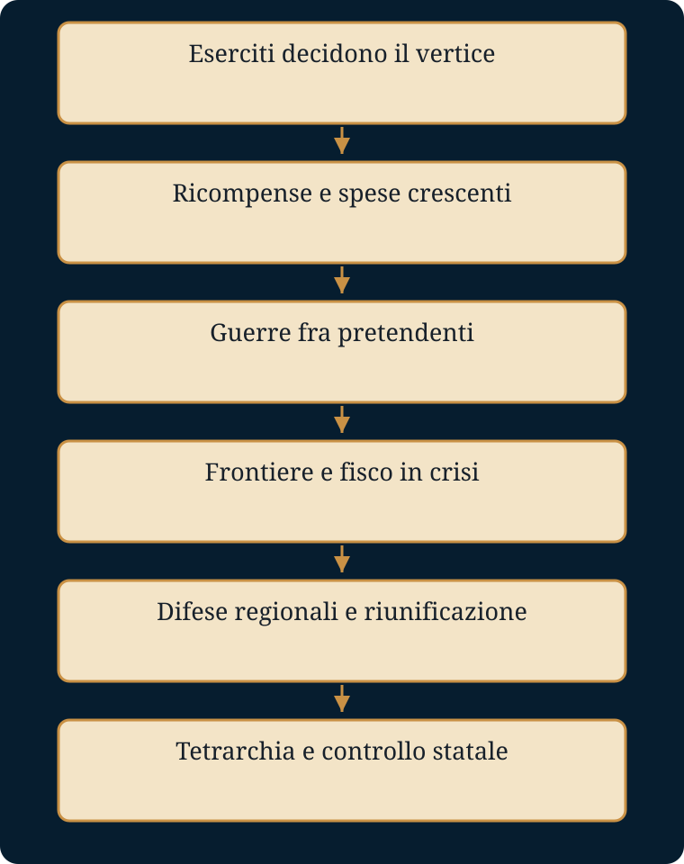

Come può l’esercito salvare l’Impero e, insieme, mettere in crisi il suo governo?
Luoghi e tempi. Roma e il limes renano-danubiano; Africa romana; Persia sasanide; Gallie e Palmira. La difesa simultanea di fronti lontani condiziona fisco e successione.
- Mondo precedente
- Il Principato cerca equilibrio fra esercito, Senato e consenso provinciale.
- Fratture
- Il 193 riapre la guerra civile; dal 235 l’instabilità militare diventa ricorrente.
- Attori e conflitti
- Legioni, imperatori, contribuenti, città e poteri regionali cercano risorse e protezione.
- Processo e cause
- Guerre civili, frontiere indebolite, maggiori spese e prelievi fiscali si alimentano reciprocamente.
- Conseguenze
- Riunificazione e nuove strutture impediscono il collasso, aumentando il controllo dello Stato.
- Risposta alla domanda
- Le legioni difendono i confini, ma quando impongono rivali al governo consumano le risorse della difesa comune.
La dispensa integrale
Testo originale di gbprof e Libera, comprese le attività e le tabelle. Le sezioni introduttiva e conclusiva di questa pagina sono strumenti aggiunti. Scarica il Word originale.
ROMA
IL POTERE, L’ESERCITO, LA CRISI
Dai Flavi all’anarchia militare e alla svolta di Diocleziano
RACCONTO STORICO • SCHEMI • VOCABOLARIO |
Un lavoro di
gbprof e Libera
Dispensa didattica per lo studio della storia romana
Come usare questa dispensa
1. Leggi il racconto | Segui la trasformazione del potere romano come una vicenda continua. Il testo narrativo è conservato integralmente. |
2. Ricostruisci il processo | Usa gli schemi per collegare cause, passaggi, conseguenze e mutamenti istituzionali. |
3. Fissa le parole | Il vocabolario chiarisce termini politici, militari e giuridici indispensabili. |
4. Controlla ciò che sai | I saperi irrinunciabili indicano ciò che deve restare al termine dello studio. |
5. Argomenta | Le domande aperte richiedono risposte complete, con nessi causali e riferimenti precisi. |
Struttura: Parte I — racconto storico; Parte II — laboratorio didattico; Parte III — confronto tra imperatori e trasformazione del potere.
Indice
PARTE I — Il racconto storico
PARTE II — Laboratorio didattico: 14 unità di studio
PARTE III — Tabella comparativa degli imperatori
APPENDICE — Linea del tempo essenziale e griglia per la risposta aperta
PARTE I
IL RACCONTO STORICO
Testo integrale, conservato senza modifiche
Prologo — L’eredità di Cesare e il compromesso di Augusto
Quando, molti decenni dopo la morte di Augusto, i Flavi e i Severi si trovarono a governare l’Impero romano, ereditarono un sistema politico nato da una ferita mai completamente rimarginata: la fine della Repubblica. Roma continuava a usare parole antiche — Senato, magistrature, popolo, leggi — ma dietro quelle parole si era ormai formato un potere nuovo, personale e imperiale.
Il primo a tentare di raccogliere nelle proprie mani un’autorità quasi assoluta era stato Gaio Giulio Cesare. Dopo le guerre civili, Cesare aveva ampliato il Senato, introdotto provinciali e sostenitori, concesso la cittadinanza a nuove comunità, riformato il sistema fiscale e agrario e dato a Roma il calendario giuliano. Ma il punto decisivo non furono soltanto le riforme. Fu il modo in cui egli trasformò la dittatura: da magistratura straordinaria, limitata nel tempo e destinata alle emergenze, essa divenne con il titolo di dictator perpetuo un potere personale senza scadenza.
Per molti senatori quella trasformazione significava una sola cosa: la monarchia stava tornando a Roma sotto un altro nome. Alle Idi di marzo del 44 a.C., Cesare fu assassinato. Il suo sangue non restaurò la Repubblica. Aprì invece una nuova stagione di guerre civili, dalla quale uscì vincitore il suo erede Ottaviano.
Ottaviano comprese la lezione che Cesare aveva pagato con la vita: a Roma non bastava possedere il potere, bisognava renderlo accettabile. Dopo la vittoria di Azio del 31 a.C., non si proclamò re né dittatore perpetuo. Affermò di aver restituito la Repubblica al Senato e al popolo e si presentò come princeps, il primo dei cittadini. Conservò le magistrature tradizionali, rispettò formalmente la legge e fondò la propria superiorità sull’auctoritas, il prestigio personale, religioso e politico che lo poneva al di sopra degli altri senza dichiararlo apertamente.
In realtà Augusto controllava l’esercito e le province strategiche. Il suo imperium proconsulare maius gli garantiva un comando superiore, mentre la tribunicia potestas gli permetteva di intervenire nella vita politica e di presentarsi come difensore del popolo. Il suo regime era dunque una monarchia, ma una monarchia accuratamente nascosta dentro le forme della Repubblica.
Per evitare scontri diretti con l’aristocrazia, Augusto imparò anche a governare attraverso la mediazione. Una commissione ristretta di senatori esaminava in anticipo le proposte e permetteva al principe di conoscere gli umori dell’assemblea. Il sistema funzionava perché Augusto possedeva un prestigio eccezionale e perché tutti ricordavano l’orrore delle guerre civili. Ma quell’equilibrio era fragile: dipendeva dall’uomo che lo aveva creato più che da regole certe di successione.
1 — Una monarchia che non sapeva come trasmettere il potere
Quando Augusto morì nel 14 d.C., il problema nascosto del Principato divenne evidente. Roma aveva ormai un imperatore, ma non possedeva una legge chiara che stabilisse chi dovesse succedergli. Il potere passò attraverso la famiglia, le adozioni, il consenso del Senato e, sempre più spesso, la forza armata.
Tiberio cercò di mantenere l’equilibrio augusteo, ma i rapporti con il Senato si fecero difficili. Caligola spinse il potere verso forme apertamente autocratiche e fu assassinato dai pretoriani nel 41 d.C. Claudio, scelto in un momento di confusione, apparve agli autori senatori come un uomo debole, dominato dai liberti e dalle mogli. Eppure, dietro quel ritratto ostile, vi era un imperatore capace di comprendere una trasformazione profonda: Roma non poteva più essere governata come se fosse ancora una città-stato italiana.
La scena decisiva si svolse in Senato. Alcuni notabili della Gallia Comata, già cittadini romani, chiedevano di accedere alle magistrature e quindi all’assemblea senatoria. Molti aristocratici italici reagirono con rabbia. Ricordarono le antiche guerre combattute contro i Galli, il sacco di Roma e la resistenza opposta a Cesare. Per loro il Senato doveva restare il cuore esclusivo dell’Italia dominatrice.
Claudio rispose con la storia. Ricordò che Roma era cresciuta proprio perché aveva saputo accogliere uomini e popoli diversi. Persino alcuni re dell’età più antica erano stati stranieri; istituzioni considerate eterne erano nate, in realtà, come innovazioni. Il senso del suo discorso era netto: ciò che aveva reso Roma grande non era la purezza, ma la capacità di trasformare i vinti in partecipi del potere.
I notabili gallici entrarono così nelle strutture politiche romane. Non fu un gesto di generosità astratta. Fu una scelta di governo: l’Impero aveva bisogno delle élite provinciali, della loro ricchezza, delle loro competenze e della loro lealtà. Il processo di integrazione, iniziato già con Cesare, sarebbe proseguito con i Flavi e avrebbe cambiato per sempre la composizione della classe dirigente romana.
Ma l’ultimo imperatore della dinastia, Nerone, consumò il poco equilibrio rimasto. Il suo governo divenne sempre più personale e spettacolare, mentre i rapporti con il Senato e con gli eserciti si deterioravano. Nel 68 d.C., abbandonato da molti, Nerone si uccise. Con lui finì la dinastia Giulio-Claudia. Per la prima volta dall’inizio del Principato, nessun erede riconosciuto era pronto a occupare il trono. Roma stava per scoprire chi possedeva davvero il potere.
2 — L’anno dei quattro imperatori: il segreto dell’Impero
Il 69 d.C. fu l’anno in cui la finzione politica di Augusto si spezzò davanti agli occhi di tutti. Il Senato poteva proclamare un imperatore, ma non poteva difenderlo. Roma poteva celebrare il nuovo principe, ma le legioni delle province potevano scegliere un altro uomo e marciare contro la capitale. Tacito avrebbe riassunto la scoperta con un’espressione memorabile: arcanum imperii, il segreto dell’Impero. Un imperatore poteva essere creato lontano da Roma.
Il primo a tentare di raccogliere l’eredità di Nerone fu Galba, anziano aristocratico e governatore in Spagna. Il Senato lo riconobbe, ma il nuovo sovrano volle presentarsi come restauratore della disciplina e dell’austerità. Rifiutò i donativi promessi ai pretoriani e cercò di risanare le finanze con rigore. In un sistema in cui la fedeltà dei soldati dipendeva anche dalle ricompense, la sua severità divenne un errore fatale. Nel gennaio del 69 i pretoriani lo assassinarono e acclamarono Otone.
Otone aveva legami con il mondo di Nerone e sperava di controllare Roma. Ma le legioni stanziate in Germania avevano già proclamato il proprio comandante, Aulo Vitellio. Gli eserciti si mossero l’uno contro l’altro. Presso Bedriaco, vicino a Cremona, le forze di Otone furono sconfitte. Per impedire che la guerra civile continuasse a divorare cittadini romani, Otone si tolse la vita.
Vitellio entrò a Roma da vincitore, ma il suo trionfo durò pochi mesi. In Oriente, le legioni impegnate nella guerra di Giudea acclamarono Tito Flavio Vespasiano, un generale esperto, di origini non aristocratiche, abituato alla disciplina degli accampamenti. Il governatore della Siria Licinio Muciano e le armate danubiane lo sostennero. La guerra tornò in Italia.
Nel dicembre del 69 Roma divenne il teatro di scontri feroci. Il Campidoglio bruciò; Flavio Sabino, fratello di Vespasiano, fu ucciso. Vitellio venne catturato, trascinato per le strade e assassinato. Solo allora il Senato ratificò ciò che le armi avevano già deciso: Vespasiano era imperatore.
Il nuovo principe non apparteneva alle grandi famiglie patrizie. Proveniva da una famiglia equestre di Rieti. La sua legittimità non nasceva dal sangue di Augusto, da un’adozione prestigiosa o dalla scelta libera del Senato. Nasceva dalla vittoria militare. Era una novità che non poteva più essere nascosta, ma doveva essere trasformata in legge.
3 — Vespasiano: ricostruire Roma dopo la guerra civile
Vespasiano ricevette un Impero stremato. Le spese di Nerone, le rivolte e la guerra civile avevano svuotato le casse. Le legioni avevano imparato a rovesciare e creare imperatori. Il Senato era stato umiliato dagli eventi. Roma aveva bisogno di denaro, disciplina e una nuova forma di legittimità.
Il primo problema riguardava il potere stesso. Augusto aveva potuto governare grazie al proprio carisma e al prestigio accumulato dopo la fine delle guerre civili. Vespasiano non possedeva nulla di simile. Per questo il suo governo venne formalizzato attraverso la Lex de imperio Vespasiani. La legge raccoglieva e riconosceva in modo unitario le prerogative già esercitate dai precedenti imperatori: convocare il Senato, concludere trattati, raccomandare candidati alle magistrature, intervenire in tutto ciò che fosse ritenuto utile allo Stato.
Il Principato cambiò così natura. Il potere imperiale non appariva più soltanto come una somma di cariche repubblicane tenute insieme dall’auctoritas del principe. Diveniva un insieme giuridicamente riconosciuto di competenze superiori. La vittoria militare di Vespasiano veniva tradotta in diritto.
Poi venne il denaro. L’imperatore impose nuove tasse, ripristinò tributi aboliti e revocò privilegi fiscali a città e province. Non cercava l’eleganza di un sovrano raffinato: governava con il pragmatismo di chi aveva conosciuto gli accampamenti e sapeva che un esercito senza paga si ribella e uno Stato senza entrate crolla.
L’aneddoto della tassa sull’urina divenne il simbolo di quel pragmatismo. L’urina raccolta nei bagni pubblici veniva utilizzata dai fulloni e dai tintori. Tito, figlio dell’imperatore, giudicò indegno tassare una materia tanto sgradevole. Vespasiano gli avvicinò al naso una moneta ricavata dal tributo e gli chiese se avesse cattivo odore. Il denaro, rispose in sostanza, non puzza: pecunia non olet.
Le entrate fiscali e il bottino della guerra di Giudea furono impiegati per ricostruire e trasformare Roma. Il Foro della Pace celebrava la vittoria e il ritorno dell’ordine. L’Anfiteatro Flavio, che in seguito sarebbe stato chiamato Colosseo, sorse dove Nerone aveva fatto scavare il lago artificiale della Domus Aurea. Il significato politico era evidente: lo spazio che il tiranno aveva sottratto alla città per il proprio lusso veniva restituito al popolo come luogo pubblico.
Intanto Tito concludeva la guerra di Giudea. Nel 70 d.C. Gerusalemme fu assediata e conquistata; il Secondo Tempio venne distrutto. I tesori portati a Roma, tra cui la menorah raffigurata poi sull’Arco di Tito, alimentarono la propaganda della dinastia e contribuirono al finanziamento delle opere pubbliche.
Vespasiano intervenne anche sull’esercito. Sciolse reparti ribelli, epurò legioni compromesse e ristabilì la disciplina. Non cercò grandi conquiste spettacolari: preferì consolidare le frontiere e rafforzare le linee difensive che sarebbero diventate il limes. Parallelamente aprì il Senato a cavalieri e notabili italici e provinciali, soprattutto spagnoli e galli. La vecchia aristocrazia repubblicana, decimata e indebolita, venne affiancata e in parte sostituita da uomini nuovi, più vicini al mondo amministrativo e provinciale dell’Impero.
Nel 79 d.C. Vespasiano morì di morte naturale, evento raro per un imperatore del I secolo. La tradizione gli attribuisce fino all’ultimo un’ironia asciutta: “Ahimè, credo che sto per diventare un dio”, avrebbe detto, alludendo alla divinizzazione riservata agli imperatori morti. Con lui il potere passò senza guerra civile al figlio Tito. Per la prima volta dai tempi di Augusto, una successione dinastica sembrava funzionare.
4 — Tito e Domiziano: il volto benevolo e quello autocratico dei Flavi
Il regno di Tito durò soltanto due anni, ma fu segnato da calamità immense. Nel 79 d.C. il Vesuvio eruttò e seppellì Pompei, Ercolano e altri centri della Campania. Roma stessa fu colpita da un grave incendio. Tito cercò di presentarsi come imperatore vicino alle vittime, capace di organizzare l’assistenza e di utilizzare le risorse dello Stato per affrontare l’emergenza.
Alla sua morte, nell’81, gli succedette il fratello Domiziano. Era un amministratore energico e un sovrano attento alla difesa delle frontiere. Rafforzò l’esercito, intervenne nella gestione delle province e pretese efficienza dai funzionari. Ma il suo rapporto con l’aristocrazia senatoria divenne sempre più duro.
Domiziano non si accontentava più del linguaggio prudente del Principato. Secondo la tradizione ostile dei senatori, esigeva di essere chiamato dominus et deus, signore e dio. Il Senato continuava a riunirsi, ma il suo ruolo politico si riduceva. Processi, condanne ed epurazioni alimentarono un clima di paura.
Il sistema creato da Augusto aveva sempre richiesto una rappresentazione: l’imperatore governava, ma fingeva di essere soltanto il primo cittadino. Domiziano mostrò apertamente ciò che quella rappresentazione nascondeva. Il risultato fu una congiura di palazzo. Nel 96 d.C. venne assassinato e il Senato decretò la damnatio memoriae, la cancellazione pubblica del suo nome e delle sue immagini.
Con Domiziano finì la dinastia Flavia. Restava però la sua eredità: il potere imperiale era ormai più solido, più burocratico e più apertamente superiore al Senato. L’esercito rimaneva la base ultima della sicurezza del sovrano, ma per alcuni decenni Roma avrebbe conosciuto una nuova stagione di stabilità.
5 — L’età degli Antonini: l’apogeo e le prime crepe
Dopo la morte di Domiziano, il Senato favorì l’ascesa dell’anziano Nerva. Egli comprese di non avere sufficiente forza militare e adottò Traiano, generale prestigioso e amato dalle legioni. Cominciò così l’età degli imperatori adottivi, spesso ricordata come il momento di massimo equilibrio dell’Impero.
Traiano portò Roma alla massima estensione territoriale. Adriano preferì consolidare i confini. Antonino Pio governò in un lungo periodo di relativa pace. Marco Aurelio, filosofo e imperatore, dovette invece affrontare una realtà più dura: le guerre contro Marcomanni e Quadi, la pressione lungo il Danubio e una grave epidemia, la peste antonina, che colpì la popolazione, ridusse la forza lavoro e indebolì le entrate fiscali.
L’Impero appariva ancora grandioso. Le strade collegavano province lontane, le città prosperavano, le élite locali partecipavano alla cultura romana. Ma il costo della difesa cresceva. Gli eserciti stanziati ai confini diventavano sempre più importanti e le risorse necessarie per mantenerli pesavano sull’economia.
Marco Aurelio ruppe inoltre il principio dell’adozione scegliendo come successore il figlio Commodo. La successione tornava dinastica. Commodo si mostrò incapace di mantenere l’equilibrio tra esercito, corte e Senato. Il suo governo assunse tratti arbitrari e spettacolari, fino al suo assassinio nel 192 d.C.
La morte di Commodo riaprì la lotta per il potere. Come nel 69, furono gli eserciti delle province a decidere il futuro dell’Impero. Il lungo splendore antonino si chiudeva; dietro la facciata dell’ordine riemergeva il segreto già rivelato un secolo prima: l’imperatore dipendeva dalle legioni.
6 — Settimio Severo: l’esercito entra nel cuore dello Stato
Nel 193 d.C. diversi uomini rivendicarono la porpora. Le province e le armate scelsero i propri candidati. A imporsi fu Settimio Severo, comandante delle legioni pannoniche, nato a Leptis Magna, nell’Africa romana. Anche lui, come Vespasiano, arrivava al potere dalle province e grazie all’esercito. Ma, a differenza del fondatore dei Flavi, non sentì più il bisogno di mantenere un’autentica collaborazione con il Senato.
Settimio Severo trasformò il rapporto tra imperatore e soldati. Aumentò le paghe, concesse vantaggi ai veterani e rafforzò il legame diretto tra il sovrano e le legioni. Sciolse le vecchie coorti pretoriane, troppo coinvolte nelle lotte politiche romane, e le sostituì con soldati scelti dalle armate provinciali, soprattutto danubiane e illiriche. Il cuore della capitale veniva occupato da uomini che non dipendevano più dall’aristocrazia italica ma dall’imperatore.
Anche l’amministrazione cambiò. I cavalieri e i funzionari imperiali acquistarono maggior peso, mentre i senatori persero competenze. Il prefetto del pretorio non era più soltanto il comandante della guardia: divenne una delle massime autorità giudiziarie e amministrative dell’Impero.
La tradizione attribuisce a Settimio Severo, ormai morente, un consiglio rivolto ai figli Caracalla e Geta: restare uniti, arricchire i soldati e disprezzare tutti gli altri. Che le parole siano state pronunciate esattamente così o no, esse riassumono la logica del nuovo sistema. Il consenso del Senato poteva essere utile; la fedeltà dell’esercito era indispensabile.
Alla morte di Settimio, nel 211, Caracalla e Geta ereditarono insieme l’Impero. L’accordo durò pochissimo. Caracalla fece uccidere il fratello e rimase unico sovrano. La monarchia militare mostrava già il proprio volto più brutale: la famiglia imperiale non garantiva più stabilità, ma poteva diventare il primo campo di battaglia.
7 — Caracalla e la cittadinanza universale
Nel 212 d.C. Caracalla emanò uno dei provvedimenti più importanti della storia romana: la Constitutio Antoniniana. Quasi tutti gli uomini liberi dell’Impero ricevettero la cittadinanza romana. La distinzione giuridica tra cittadini e peregrini, che per secoli aveva segnato il rapporto tra Roma e i popoli soggetti, perse gran parte del proprio significato.
Il provvedimento concludeva un processo iniziato molto tempo prima. Cesare aveva ampliato la cittadinanza e aperto il Senato ai provinciali. Claudio aveva difeso l’accesso dei notabili galli alle magistrature. I Flavi avevano promosso aristocratici della Spagna e della Gallia. Ora l’intero Impero veniva unificato sotto una condizione giuridica comune.
Ma la scelta di Caracalla non nacque soltanto da un ideale di integrazione. L’esercito costava sempre di più. Le paghe erano state aumentate e lo Stato aveva bisogno di nuove entrate. Alcune imposte, come quella sulle successioni, gravavano sui cittadini romani. Estendendo la cittadinanza, l’imperatore ampliava anche la base fiscale.
La cittadinanza cambiò quindi significato. Un tempo era stata un privilegio prezioso, concesso gradualmente a comunità e individui. Ora diveniva una condizione quasi universale, ma più legata agli obblighi fiscali che alla partecipazione politica. Gli abitanti dell’Impero erano tutti più romani sul piano giuridico, mentre il potere reale era sempre più lontano da loro e concentrato nell’imperatore e nell’esercito.
Caracalla fu assassinato nel 217 dal prefetto del pretorio Macrino. Per la prima volta un uomo che non apparteneva al Senato riuscì a ottenere la porpora imperiale. Era un altro segnale: le antiche gerarchie sociali non controllavano più l’accesso al potere. Ma Macrino durò poco. La dinastia severiana sarebbe continuata grazie all’azione delle donne della famiglia imperiale.
8 — Le donne siriane, Eliogabalo e Alessandro Severo
Dopo la morte di Caracalla, Giulia Mesa e le altre donne della famiglia severiana riuscirono a mobilitare ricchezze, clientele e legioni. Prima imposero Eliogabalo, poi Alessandro Severo. La corte imperiale appariva sempre più legata alle province orientali e alle loro tradizioni.
Eliogabalo era giovanissimo e sacerdote del dio solare di Emesa, El-Gabal. Tentò di collocare il proprio culto al centro della religione imperiale. A Roma il suo comportamento fu percepito come una provocazione contro il mos maiorum, l’insieme dei costumi tradizionali. Le fonti, ostili e scandalizzate, lo descrissero come un sovrano eccentrico, incapace di comprendere la gravità del ruolo imperiale. Nel 222 venne ucciso dai pretoriani.
Gli succedette il cugino Alessandro Severo. Il nuovo governo cercò una riconciliazione con il Senato e si affidò a giuristi come Ulpiano. Sembrava possibile limitare l’arroganza dei soldati e recuperare una forma di equilibrio civile. Ma quel tentativo arrivava troppo tardi.
A Oriente era nata una nuova potenza: i Persiani sasanidi avevano sostituito i Parti e minacciavano le province romane. A Nord, Alamanni e altri popoli premevano sul Reno e sul Danubio. L’imperatore doveva spostarsi continuamente con l’esercito, raccogliere denaro e affrontare soldati che pretendevano vittorie e ricompense.
Quando Alessandro cercò di negoziare con le popolazioni germaniche, offrendo denaro invece di combattere, le sue truppe interpretarono la decisione come debolezza e umiliazione. Nel 235, presso Magonza, l’imperatore e sua madre Giulia Mamea furono assassinati. Con quella morte terminò la dinastia dei Severi. Nessuna autorità civile, nessuna tradizione dinastica e nessuna legge sembravano ormai capaci di controllare l’esercito.
9 — L’anarchia militare: imperatori creati e distrutti dalle legioni
Dopo il 235 l’Impero entrò in una lunga stagione di instabilità. Per quasi cinquant’anni, comandanti militari e usurpatori si succedettero con rapidità. Le legioni proclamavano un imperatore, lo seguivano finché garantiva vittorie e denaro, poi potevano abbandonarlo o assassinarlo. In molti casi il sovrano non riusciva a governare per più di pochi anni.
Il primo simbolo di questa nuova epoca fu Massimino il Trace. Di origini umili e provinciali, aveva percorso l’intera carriera nell’esercito. Non apparteneva al Senato, non possedeva la cultura dell’aristocrazia romana e non ritenne necessario recarsi nella capitale. Governava dagli accampamenti e combatteva lungo le frontiere.
Le fonti senatorie lo descrissero come un gigante brutale, quasi una creatura selvaggia, capace di imprese fisiche sovrumane. Dietro la caricatura si legge il disprezzo dell’antica élite verso i nuovi imperatori-soldati. Roma continuava a considerarsi il centro del mondo, ma il potere si stava spostando verso il limes, dove si decideva la sopravvivenza dell’Impero.
Le guerre richiedevano enormi risorse. Confische, requisizioni e nuove imposte colpirono città, proprietari e comunità. Anche i cristiani, che rifiutavano il culto imperiale e possedevano organizzazioni e beni propri, furono sottoposti a persecuzioni e confische. Lo Stato non cercava soltanto uniformità religiosa: cercava anche obbedienza e risorse.
Il problema più grave nasceva dal modo stesso in cui gli imperatori ottenevano il potere. Ogni comandante proclamato dalle sue truppe doveva marciare contro un rivale. Per farlo sottraeva soldati alle frontiere. Mentre gli eserciti romani combattevano tra loro, Germani e Goti attraversavano il limes, e i Persiani sasanidi attaccavano a Oriente.
L’Impero possedeva ancora immense risorse, città, strade e tradizioni amministrative. Ma la guerra civile permanente consumava tutto. Ogni vittoria contro un rivale indeboliva la difesa comune; ogni nuovo imperatore doveva ricompensare i soldati che lo avevano innalzato; ogni aumento di paga richiedeva nuove tasse o una moneta sempre più svalutata. La crisi politica alimentava quella economica, e la crisi economica rendeva ancora più feroce la lotta politica.
10 — Il 260: l’Impero si spezza
Nel 260 d.C. Roma subì un’umiliazione senza precedenti. L’imperatore Valeriano, impegnato contro i Persiani, venne sconfitto e catturato dal re Sapore I. Un imperatore romano, il vertice del potere universale, diventava prigioniero del nemico.
Il colpo psicologico fu enorme. Il figlio Gallieno rimase a governare un territorio minacciato da ogni parte, ma l’autorità centrale non riusciva più a garantire la difesa delle province. Le regioni più esposte cominciarono a organizzarsi autonomamente.
A Occidente nacque l’Impero delle Gallie, che comprendeva Gallia, Britannia e Hispania. I suoi sovrani non volevano necessariamente distruggere Roma: cercavano di difendere localmente il Reno contro Franchi e Alamanni, poiché il governo centrale non era in grado di farlo. A Oriente Palmira, guidata prima da Odenato e poi da Zenobia, costruì un proprio dominio su Siria, Palestina ed Egitto e si presentò come barriera contro la Persia.
L’Impero romano si trovò così diviso in tre grandi aree: il territorio centrale ancora controllato dall’imperatore, l’Impero delle Gallie a Occidente e il regno di Palmira a Oriente. Non era una divisione progettata, ma il risultato della necessità. Le province cercavano protezione dove potevano trovarla.
Intanto l’economia si deteriorava. Le strade erano insicure, gli scambi diminuivano, le campagne si spopolavano. Epidemie e carestie riducevano la popolazione e la forza lavoro. La moneta d’argento perdeva valore perché lo Stato diminuiva la quantità di metallo prezioso contenuta nelle monete. In alcune regioni gli scambi tornavano al baratto.
La crisi non era soltanto militare. Era una crisi dello spazio imperiale. Per secoli Roma aveva unito regioni lontane grazie alla pace, alle strade, alla moneta e a un’amministrazione comune. Ora ciascuno di questi legami si indeboliva. Se l’Impero fosse sopravvissuto, avrebbe dovuto trasformarsi radicalmente.
11 — Gli imperatori illirici e la riconquista dell’Impero
La salvezza arrivò da uomini cresciuti nelle regioni danubiane: Pannonia, Dalmazia, Mesia. Erano comandanti abituati alla guerra continua, alla disciplina dura e alla mobilità degli eserciti. La storiografia li chiama imperatori illirici.
Claudio il Gotico affrontò e sconfisse grandi gruppi gotici nei Balcani. Aureliano riconquistò Palmira, sconfisse Zenobia e pose fine all’Impero delle Gallie, ricomponendo l’unità territoriale. Consapevole che persino Roma non era più al sicuro, fece costruire una nuova poderosa cinta muraria attorno alla capitale: le mura aureliane. Era un segno impressionante. La città che per secoli aveva dominato il Mediterraneo senza temere assedi doveva ora proteggersi.
Probo continuò l’opera di difesa e riconquista, soprattutto in Gallia. Questi sovrani non restaurarono il vecchio Principato. Governarono come comandanti supremi di uno Stato militarizzato. La burocrazia stessa cominciò a organizzarsi secondo modelli simili a quelli dell’esercito, con ranghi, carriere e disciplina.
Anche la composizione delle truppe cambiava. Roma arruolava in misura crescente uomini di origine barbarica. La distinzione tra il soldato romano e il guerriero proveniente oltre il confine diventava meno netta. Molti difensori dell’Impero provenivano dagli stessi mondi che alimentavano le incursioni.
Gli imperatori illirici riuscirono a evitare il collasso, ma la loro vittoria aveva un prezzo. L’Impero sopravviveva perché era diventato più militare, più centralizzato e più esigente. La libertà delle città, il prestigio del Senato e la flessibilità sociale contavano meno della capacità dello Stato di raccogliere uomini, denaro e viveri per la guerra.
12 — Diocleziano: la fine del Principato
Nel 284 d.C. i soldati acclamarono un altro comandante dalmata: Diocleziano. Anche lui arrivava al potere attraverso l’esercito, ma comprese che non bastava vincere i rivali. Occorreva impedire che il sistema continuasse a produrre usurpazioni, guerre civili e frontiere abbandonate.
L’Impero era troppo vasto perché un solo sovrano potesse essere presente ovunque. Diocleziano costruì allora la Tetrarchia, il governo dei quattro. Due Augusti avrebbero governato le grandi metà dell’Impero e due Cesari li avrebbero affiancati e, almeno nelle intenzioni, sostituiti in modo ordinato. Diocleziano governava l’Oriente, Massimiano l’Occidente; Galerio e Costanzo Cloro erano i Cesari.
Le sedi del potere si spostarono vicino alle frontiere e ai principali teatri di guerra: Nicomedia, Sirmio, Milano, Treviri. Roma non era più la capitale politica effettiva. Rimaneva il centro simbolico della tradizione, ma gli imperatori governavano là dove gli eserciti e le minacce richiedevano la loro presenza.
Diocleziano divise il territorio in un numero maggiore di province, raccolte in diocesi e grandi prefetture. Lo scopo era rendere l’amministrazione più controllabile e impedire che un singolo governatore concentrasse nelle proprie mani territori ed eserciti sufficienti per ribellarsi.
Anche l’immagine dell’imperatore cambiò. Il princeps augusteo, primo cittadino che fingeva di condividere il potere con il Senato, scomparve. Il sovrano divenne una figura sacralizzata, distante, circondata da cerimonie di corte. I cittadini erano sempre più trattati come sudditi. La storiografia chiama questo nuovo sistema Dominato.
Lo Stato cercò inoltre di controllare la società in modo più rigido. Professioni e obblighi vennero progressivamente vincolati, i contadini furono legati alla terra, le imposte organizzate con maggiore severità. La persecuzione contro i cristiani divenne sistematica: Diocleziano tentava di restaurare l’unità religiosa tradizionale come fondamento dell’unità politica.
L’Impero che uscì dalla crisi non era più quello di Augusto. Era sopravvissuto, ma aveva cambiato natura. La Repubblica di facciata, il dialogo con il Senato e l’idea del principe come primo dei cittadini appartenevano ormai al passato. Roma aveva evitato la dissoluzione trasformandosi in una monarchia militare, burocratica e sacralizzata.
Epilogo — Il prezzo della sopravvivenza
Tra il 69 e il 284 d.C. il potere romano compì un lungo viaggio. Vespasiano aveva trasformato la vittoria delle legioni in un’autorità riconosciuta dalla legge. I Severi avevano posto l’esercito al centro dello Stato. L’anarchia militare aveva mostrato il risultato estremo di quella dipendenza: imperatori innalzati e abbattuti dagli stessi soldati, province costrette a difendersi da sole, moneta svalutata, commerci interrotti e confini violati.
Diocleziano pose fine alla crisi non tornando indietro, ma accettando ciò che Roma era diventata. Divise il potere, moltiplicò gli uffici, rafforzò il controllo fiscale e trasformò l’imperatore in un sovrano assoluto. Salvò l’Impero, ma chiuse definitivamente il mondo politico costruito da Augusto.
La storia di questi due secoli non è dunque soltanto una successione di imperatori. È il racconto di una trasformazione: il passaggio da un potere che cercava il consenso delle antiche istituzioni a uno Stato che si reggeva sulla disciplina dell’esercito, sulla burocrazia e sulla coercizione.
Roma non cadde nel III secolo. Ma, per continuare a esistere, smise di essere la Roma del Principato.
Nota didattica
Questo testo rielabora in forma narrativa i contenuti del documento di partenza. Non sostituisce l’analisi istituzionale e politica: la prepara, offrendo agli studenti una trama cronologica continua sulla quale costruire successivamente concetti, confronti e sintesi.
PARTE II
LABORATORIO DIDATTICO
Schemi, vocabolario, saperi irrinunciabili e domande aperte
Prologo — Cesare e Augusto: due modi di costruire il potere
Schema del processo storico
1 | Crisi della Repubblica → concentrazione del potere nelle mani di Cesare |
2 | Dictator perpetuo → timore della monarchia → cesaricidio |
3 | Ottaviano apprende la lezione → conserva forme repubblicane |
4 | Auctoritas + tribunicia potestas + imperium proconsulare maius → Principato |
5 | Equilibrio princeps–Senato: efficace, ma legato al prestigio personale di Augusto |
Vocabolario essenziale
Termine | Significato nel contesto |
dittatura | Magistratura straordinaria repubblicana, originariamente temporanea e legata a un’emergenza. |
dictator perpetuo | Titolo assunto da Cesare che trasformava una carica temporanea in potere personale a vita. |
Principato | Sistema inaugurato da Augusto: monarchia sostanziale presentata attraverso istituzioni e linguaggio repubblicani. |
auctoritas | Prestigio politico e morale che rendeva superiore l’influenza del princeps. |
tribunicia potestas | Poteri dei tribuni della plebe: inviolabilità, veto e protezione dei cittadini. |
imperium proconsulare maius | Comando superiore sulle province e sugli eserciti, più ampio di quello degli altri governatori. |
Saperi irrinunciabili
■ Cesare rese personale e permanente una magistratura nata come temporanea.
■ Il cesaricidio mostrò che il potere monarchico apertamente dichiarato era politicamente intollerabile per parte dell’aristocrazia.
■ Augusto concentrò il potere senza abolire formalmente la Repubblica.
■ Il controllo dell’esercito fu il fondamento materiale del Principato.
Domande aperte di comprensione
1. Perché il titolo di dictator perpetuo rese il potere di Cesare incompatibile con la tradizione repubblicana?
________________________________________________________________________________
________________________________________________________________________________
2. In che modo Augusto trasformò la lezione politica del cesaricidio in un nuovo sistema di governo?
________________________________________________________________________________
________________________________________________________________________________
3. Spiega la differenza tra il potere formale delle magistrature e l’auctoritas personale di Augusto.
________________________________________________________________________________
________________________________________________________________________________
4. Perché il compromesso augusteo era insieme solido e fragile?
________________________________________________________________________________
________________________________________________________________________________
Unità 1 — La successione e l’integrazione delle province
Schema del processo storico
1 | Morte di Augusto → assenza di una legge di successione |
2 | Dinastia Giulio-Claudia → tensione crescente fra imperatore e Senato |
3 | Claudio → ingresso delle élite galliche nelle magistrature e nel Senato |
4 | Roma si rafforza assimilando le élite provinciali |
5 | Nerone → rottura dell’equilibrio e fine della dinastia |
Vocabolario essenziale
Termine | Significato nel contesto |
successione dinastica | Trasmissione del potere all’interno di una famiglia, anche senza una norma costituzionale esplicita. |
élite provinciali | Gruppi dirigenti delle province, spesso già romanizzati e cittadini. |
Gallia Comata | Regione gallica esterna alla più antica provincia romana della Gallia Narbonense. |
magistrature | Cariche pubbliche della tradizione repubblicana. |
romanizzazione | Processo di integrazione politica, culturale e giuridica nel mondo romano. |
Saperi irrinunciabili
■ Il Principato non possedeva una regola chiara e stabile per la successione.
■ Claudio sostenne che Roma era cresciuta assimilando uomini e popoli diversi.
■ L’ingresso dei notabili gallici ampliò la classe dirigente imperiale.
■ La fine di Nerone aprì una crisi politica e militare.
Domande aperte di comprensione
1. Quale contraddizione emerse alla morte di Augusto?
________________________________________________________________________________
________________________________________________________________________________
2. Perché il discorso di Claudio sui Galli rappresenta una scelta politica e non soltanto culturale?
________________________________________________________________________________
________________________________________________________________________________
3. In che senso l’integrazione provinciale modificò la classe dirigente romana?
________________________________________________________________________________
________________________________________________________________________________
4. Quali fattori prepararono la crisi del 68-69 d.C.?
________________________________________________________________________________
________________________________________________________________________________
Unità 2 — Il 69 d.C. e l’arcanum imperii
Schema del processo storico
1 | Galba sostenuto dal Senato → perde l’appoggio dei pretoriani |
2 | Otone acclamato a Roma → sconfitto dalle legioni germaniche |
3 | Vitellio vittorioso → governo breve e fragile |
4 | Vespasiano acclamato dalle legioni orientali → marcia sull’Italia |
5 | Il Senato ratifica il vincitore → il potere nasce ormai dagli eserciti |
Vocabolario essenziale
Termine | Significato nel contesto |
anno dei quattro imperatori | Il 69 d.C., segnato dalla successione di Galba, Otone, Vitellio e Vespasiano. |
pretoriani | Soldati della Guardia pretoriana, stanziati presso Roma e capaci di intervenire nella successione imperiale. |
acclamazione | Proclamazione di un comandante come imperatore da parte dei soldati. |
arcanum imperii | Il “segreto dell’Impero”: un imperatore poteva essere creato lontano da Roma dalle legioni provinciali. |
guerra civile | Conflitto armato tra cittadini e eserciti dello stesso Stato. |
Saperi irrinunciabili
■ Il 69 d.C. rivelò che il Senato non controllava realmente la successione.
■ Le legioni provinciali divennero soggetti politici decisivi.
■ Ogni esercito poteva sostenere il proprio comandante.
■ Vespasiano conquistò il potere grazie alle forze orientali e danubiane.
Domande aperte di comprensione
1. Perché il 69 d.C. distrusse la finzione che l’imperatore fosse scelto a Roma?
________________________________________________________________________________
________________________________________________________________________________
2. Quali errori politici commise Galba?
________________________________________________________________________________
________________________________________________________________________________
3. Confronta il comportamento di Otone con quello di Vitellio.
________________________________________________________________________________
________________________________________________________________________________
4. Che cosa rese possibile la vittoria di Vespasiano?
________________________________________________________________________________
________________________________________________________________________________
Unità 3 — Vespasiano: legalità, finanze e ricostruzione
Schema del processo storico
1 | Vittoria militare → necessità di legittimazione giuridica |
2 | Lex de imperio Vespasiani → poteri imperiali definiti e accorpati |
3 | Crisi finanziaria → tasse, riduzione dei privilegi, disciplina della spesa |
4 | Bottino di Giudea + fiscalità → opere pubbliche |
5 | Riforma del Senato e dell’esercito → stabilizzazione della dinastia |
Vocabolario essenziale
Termine | Significato nel contesto |
Lex de imperio Vespasiani | Legge che formalizzò e raccolse le principali prerogative dell’imperatore. |
legittimazione | Riconoscimento politico e giuridico che rende accettabile l’esercizio del potere. |
fiscalità | Sistema delle imposte e delle entrate pubbliche. |
limes | Sistema di frontiere fortificate e zone militari dell’Impero. |
cooptazione | Ingresso selezionato di nuovi membri in un’istituzione o gruppo dirigente. |
pecunia non olet | “Il denaro non puzza”: formula legata al pragmatismo fiscale di Vespasiano. |
Saperi irrinunciabili
■ Vespasiano trasformò una vittoria militare in un potere riconosciuto dalla legge.
■ Il risanamento finanziario fu una priorità del suo governo.
■ Il Colosseo simboleggiò la restituzione al popolo di uno spazio occupato dalla Domus Aurea.
■ Vespasiano rafforzò disciplina militare e integrazione delle élite provinciali.
Domande aperte di comprensione
1. Perché Vespasiano aveva bisogno di una legittimazione diversa da quella di Augusto?
________________________________________________________________________________
________________________________________________________________________________
2. Quale trasformazione del Principato esprime la Lex de imperio Vespasiani?
________________________________________________________________________________
________________________________________________________________________________
3. Come si collegano politica fiscale, guerra di Giudea e costruzione del Colosseo?
________________________________________________________________________________
________________________________________________________________________________
4. Perché la riforma del Senato contribuì alla stabilità dell’Impero?
________________________________________________________________________________
________________________________________________________________________________
Unità 4 — Tito e Domiziano: due modelli di governo flavio
Schema del processo storico
1 | Tito → successione dinastica ordinata |
2 | Eruzione del Vesuvio e incendio di Roma → intervento pubblico |
3 | Breve regno → immagine di principe benevolo |
4 | Domiziano → efficienza amministrativa e difesa dei confini |
5 | Autocrazia, conflitto col Senato, congiura → damnatio memoriae |
Vocabolario essenziale
Termine | Significato nel contesto |
autocrazia | Governo nel quale il potere è concentrato nelle mani di un solo individuo. |
dominus et deus | “Signore e dio”: formula associata alla concezione assolutistica del potere di Domiziano. |
damnatio memoriae | Condanna pubblica della memoria di un personaggio, con cancellazione del nome e delle immagini. |
congiura di palazzo | Complotto organizzato nell’ambiente della corte imperiale. |
assistenza statale | Intervento pubblico a sostegno delle popolazioni colpite da calamità. |
Saperi irrinunciabili
■ Tito legò la propria immagine alla gestione delle calamità.
■ Domiziano fu amministratore capace, ma accentuò l’autoritarismo.
■ Il conflitto con il Senato contribuì alla congiura del 96 d.C.
■ La fine di Domiziano chiuse la dinastia flavia.
Domande aperte di comprensione
1. Quali elementi costruirono l’immagine positiva di Tito?
________________________________________________________________________________
________________________________________________________________________________
2. Perché il giudizio su Domiziano non può ridursi a una semplice opposizione fra “buono” e “cattivo”?
________________________________________________________________________________
________________________________________________________________________________
3. In che modo la richiesta di essere chiamato dominus et deus rompeva il linguaggio del Principato?
________________________________________________________________________________
________________________________________________________________________________
4. Che significato politico aveva la damnatio memoriae?
________________________________________________________________________________
________________________________________________________________________________
Unità 5 — Gli Antonini: apogeo e fragilità
Schema del processo storico
1 | Nerva adotta Traiano → successione per adozione |
2 | Traiano → massima espansione territoriale |
3 | Antonini → cooperazione tra imperatore e classe dirigente |
4 | Marco Aurelio → guerre di frontiera + peste antonina |
5 | Commodo → ritorno alla successione dinastica e nuova crisi |
Vocabolario essenziale
Termine | Significato nel contesto |
adozione imperiale | Scelta e adozione di un successore ritenuto adatto al governo. |
apogeo | Momento di massima potenza o sviluppo. |
peste antonina | Grande epidemia che colpì l’Impero nel II secolo, riducendo popolazione, forza lavoro ed entrate. |
Marcomanni e Quadi | Popolazioni germaniche contro cui combatté Marco Aurelio. |
pressione di frontiera | Minaccia militare esercitata da popoli esterni sui confini imperiali. |
Saperi irrinunciabili
■ L’età antonina rappresentò la fase di massima estensione dell’Impero.
■ Il sistema adottivo ridusse temporaneamente i rischi della successione.
■ Guerre ed epidemia indebolirono strutture demografiche e finanziarie.
■ La scelta dinastica di Marco Aurelio portò al governo Commodo.
Domande aperte di comprensione
1. Perché il principio adottivo sembrò offrire una soluzione al problema della successione?
________________________________________________________________________________
________________________________________________________________________________
2. Quali costi nascosti accompagnarono l’apogeo dell’Impero?
________________________________________________________________________________
________________________________________________________________________________
3. In che modo la peste antonina ebbe conseguenze anche politiche e fiscali?
________________________________________________________________________________
________________________________________________________________________________
4. Perché la successione di Commodo rappresentò una svolta?
________________________________________________________________________________
________________________________________________________________________________
Unità 6 — Settimio Severo e la monarchia militare
Schema del processo storico
1 | Morte di Commodo → guerra civile del 193 |
2 | Settimio Severo sostenuto dalle legioni pannoniche → conquista del potere |
3 | Senato marginalizzato → esercito interlocutore principale |
4 | Aumento delle paghe e privilegi ai soldati |
5 | Pretoriani sostituiti e burocrazia equestre rafforzata → monarchia militare |
Vocabolario essenziale
Termine | Significato nel contesto |
monarchia militare | Sistema in cui il potere imperiale dipende apertamente dall’esercito. |
legioni pannoniche | Truppe stanziate nella regione danubiana della Pannonia, decisive per Settimio Severo. |
prefetto del pretorio | Alto funzionario posto a capo della Guardia pretoriana, con crescenti poteri militari e giudiziari. |
ordine equestre | Ceto romano dal quale provennero molti amministratori imperiali. |
veterani | Soldati congedati al termine del servizio, spesso ricompensati con terre o denaro. |
Saperi irrinunciabili
■ Settimio Severo conquistò il potere attraverso una guerra civile.
■ Il suo governo rese esplicita la dipendenza dell’imperatore dall’esercito.
■ Le paghe militari aumentarono e la Guardia pretoriana fu riorganizzata.
■ L’amministrazione equestre ridusse ulteriormente il ruolo del Senato.
Domande aperte di comprensione
1. In che cosa la monarchia di Settimio Severo differiva dal Principato augusteo?
________________________________________________________________________________
________________________________________________________________________________
2. Perché l’aumento delle paghe militari rafforzava e allo stesso tempo rendeva fragile il potere imperiale?
________________________________________________________________________________
________________________________________________________________________________
3. Quale significato politico ebbe la sostituzione delle vecchie coorti pretorie?
________________________________________________________________________________
________________________________________________________________________________
4. Come cambiò il rapporto tra Senato, esercito e burocrazia?
________________________________________________________________________________
________________________________________________________________________________
Unità 7 — Caracalla e la cittadinanza universale
Schema del processo storico
1 | Morte di Settimio Severo → governo congiunto di Caracalla e Geta |
2 | Assassinio di Geta → potere personale di Caracalla |
3 | Constitutio Antoniniana (212) → cittadinanza a quasi tutti gli uomini liberi |
4 | Integrazione giuridica universale → fine della distinzione cives/peregrini |
5 | Allargamento della base fiscale → finanziamento dell’esercito |
Vocabolario essenziale
Termine | Significato nel contesto |
Constitutio Antoniniana | Editto del 212 d.C. che concesse la cittadinanza romana a quasi tutti gli abitanti liberi dell’Impero. |
cives | Cittadini romani. |
peregrini | Abitanti liberi dell’Impero privi della cittadinanza romana. |
base imponibile | Insieme delle persone e delle ricchezze sottoposte a tassazione. |
vicesima hereditatium | Imposta sulle successioni gravante sui cittadini romani. |
Saperi irrinunciabili
■ Caracalla eliminò il fratello Geta e governò da solo.
■ La cittadinanza universale concluse un lungo processo di integrazione.
■ L’editto ebbe una forte motivazione fiscale.
■ L’universalizzazione ridusse il valore esclusivo della cittadinanza.
Domande aperte di comprensione
1. Quale continuità esiste tra le politiche di Cesare, Claudio, i Flavi e la Constitutio Antoniniana?
________________________________________________________________________________
________________________________________________________________________________
2. Perché l’editto del 212 fu insieme una grande integrazione e un provvedimento fiscale?
________________________________________________________________________________
________________________________________________________________________________
3. Che cosa cambiò nel significato della cittadinanza romana?
________________________________________________________________________________
________________________________________________________________________________
4. In che modo le esigenze dell’esercito influenzarono la politica di Caracalla?
________________________________________________________________________________
________________________________________________________________________________
Unità 8 — Eliogabalo e Alessandro Severo: religione, Senato ed esercito
Schema del processo storico
1 | Assassinio di Caracalla → Macrino proclamato dalle truppe |
2 | Donne della famiglia severiana → restaurazione dinastica |
3 | Eliogabalo → culto di El-Gabal e rottura con il mos maiorum |
4 | Rivolta dei pretoriani → uccisione di Eliogabalo |
5 | Alessandro Severo → tentativo di conciliazione col Senato → ammutinamento e morte |
Vocabolario essenziale
Termine | Significato nel contesto |
mos maiorum | Insieme dei costumi e dei valori tradizionali degli antenati romani. |
El-Gabal | Divinità solare siriaca promossa da Eliogabalo. |
Sasanidi | Dinastia persiana che sostituì i Parti e divenne una potente minaccia orientale. |
Alamanni | Confederazione germanica attiva lungo il Reno. |
ammutinamento | Ribellione collettiva di soldati contro i propri comandanti o il governo. |
Saperi irrinunciabili
■ Macrino fu il primo imperatore non appartenente al rango senatorio.
■ Le donne severiane ebbero un ruolo decisivo nella successione.
■ La politica religiosa di Eliogabalo fu percepita come incompatibile con la tradizione romana.
■ Alessandro Severo fu ucciso perché i soldati giudicarono debole la sua politica verso i Germani.
Domande aperte di comprensione
1. Quale ruolo politico ebbero Giulia Mesa, Giulia Soemia e Giulia Mamea?
________________________________________________________________________________
________________________________________________________________________________
2. Perché la politica religiosa di Eliogabalo provocò una reazione così violenta?
________________________________________________________________________________
________________________________________________________________________________
3. Quale progetto cercò di realizzare Alessandro Severo?
________________________________________________________________________________
________________________________________________________________________________
4. Perché il tentativo di negoziare la pace fu interpretato dai soldati come una colpa?
________________________________________________________________________________
________________________________________________________________________________
Unità 9 — L’anarchia militare e Massimino il Trace
Schema del processo storico
1 | 235: assassinio di Alessandro Severo → fine dei Severi |
2 | Eserciti di frontiera → proclamazione dei propri comandanti |
3 | Imperatori numerosi e regni brevissimi → violenza politica |
4 | Massimino il Trace → primo imperatore-soldato estraneo al Senato |
5 | Spese militari → requisizioni, confische e crescente pressione fiscale |
Vocabolario essenziale
Termine | Significato nel contesto |
anarchia militare | Fase 235-284 in cui il potere imperiale fu conteso da comandanti sostenuti dagli eserciti. |
imperatore-soldato | Sovrano proveniente dalla carriera militare e legittimato soprattutto dalle truppe. |
usurpatore | Chi assume il potere imperiale senza un riconoscimento generale e contro un imperatore rivale. |
requisizione | Prelievo forzoso di beni destinati alle necessità dello Stato o dell’esercito. |
barbarizzazione del comando | Espressione che indica il crescente accesso ai vertici militari di uomini provenienti dalle periferie e da origini non senatorie. |
Saperi irrinunciabili
■ Dal 235 il potere si disconnesse quasi completamente dalle istituzioni civili.
■ Gli eserciti crearono e distrussero gli imperatori.
■ Massimino non cercò la ratifica politica di Roma.
■ Le guerre di frontiera imposero costi economici sempre più pesanti.
Domande aperte di comprensione
1. Perché l’anarchia militare non indica assenza di governo, ma instabilità del potere?
________________________________________________________________________________
________________________________________________________________________________
2. Che cosa rappresenta socialmente e politicamente Massimino il Trace?
________________________________________________________________________________
________________________________________________________________________________
3. Perché le fonti senatorie lo descrissero in modo grottesco?
________________________________________________________________________________
________________________________________________________________________________
4. Quale legame esiste tra pressione militare, fiscalità e conflitto sociale?
________________________________________________________________________________
________________________________________________________________________________
Unità 10 — Il 260 e la frammentazione dell’Impero
Schema del processo storico
1 | Eserciti impegnati nelle guerre civili → confini indeboliti |
2 | Germani e Goti a nord + Sasanidi a est → pressione simultanea |
3 | 260: Valeriano catturato da Sapore I → crollo del prestigio imperiale |
4 | Impero centrale + Imperium Galliarum + Regno di Palmira |
5 | Insicurezza → crisi dei commerci, agricoltura e moneta |
Vocabolario essenziale
Termine | Significato nel contesto |
Imperium Galliarum | Stato secessionista occidentale comprendente Gallia, Britannia e Hispania. |
Regno di Palmira | Potere orientale guidato da Odenato e poi Zenobia, autonomo da Roma. |
secessione | Separazione politica di una parte del territorio dallo Stato centrale. |
svalutazione monetaria | Perdita del valore della moneta, spesso dovuta alla riduzione del metallo prezioso contenuto. |
economia di baratto | Scambio diretto di beni senza uso regolare della moneta. |
Saperi irrinunciabili
■ La cattura di Valeriano fu un trauma politico e simbolico.
■ Le regioni periferiche crearono poteri autonomi per difendersi.
■ La frammentazione fu anche una risposta alla debolezza del centro.
■ La crisi militare produsse conseguenze economiche e demografiche.
Domande aperte di comprensione
1. Perché le guerre civili favorirono le invasioni esterne?
________________________________________________________________________________
________________________________________________________________________________
2. In che senso l’Impero delle Gallie e Palmira furono secessioni ma anche strumenti di difesa locale?
________________________________________________________________________________
________________________________________________________________________________
3. Perché la cattura di Valeriano ebbe un effetto psicologico eccezionale?
________________________________________________________________________________
________________________________________________________________________________
4. Ricostruisci il rapporto tra insicurezza, commercio, agricoltura e moneta.
________________________________________________________________________________
________________________________________________________________________________
Unità 11 — Gli imperatori illirici e la riunificazione
Schema del processo storico
1 | Crisi territoriale → necessità di comandanti esperti |
2 | Imperatori illirici → carriera militare nelle regioni danubiane |
3 | Claudio il Gotico → vittorie contro i Goti |
4 | Aureliano → sconfitta di Palmira e Impero delle Gallie; mura di Roma |
5 | Probo → consolidamento della Gallia → riunificazione imperiale |
Vocabolario essenziale
Termine | Significato nel contesto |
imperatori illirici | Sovrani provenienti soprattutto dalle regioni balcaniche e danubiane, formati nell’esercito. |
riunificazione | Ricostruzione dell’unità territoriale e politica dell’Impero. |
militia inermis | Amministrazione civile organizzata secondo ranghi e logiche simili a quelle militari. |
truppe barbariche | Soldati di origine esterna all’Impero o provenienti da popolazioni germaniche, arruolati nell’esercito romano. |
mura aureliane | Grande cinta difensiva costruita da Aureliano intorno a Roma. |
Saperi irrinunciabili
■ Gli imperatori illirici salvarono l’unità politica dell’Impero.
■ La loro forza derivava dall’esperienza militare.
■ Aureliano eliminò i principali Stati secessionisti.
■ La società e l’amministrazione divennero sempre più militarizzate.
Domande aperte di comprensione
1. Perché proprio le regioni illiriche produssero molti imperatori capaci?
________________________________________________________________________________
________________________________________________________________________________
2. Quali risultati rendono centrale il governo di Aureliano?
________________________________________________________________________________
________________________________________________________________________________
3. Che cosa rivela la costruzione delle mura aureliane sulla sicurezza di Roma?
________________________________________________________________________________
________________________________________________________________________________
4. In che senso la burocrazia civile assunse una struttura militare?
________________________________________________________________________________
________________________________________________________________________________
Unità 12 — Diocleziano e la fine del Principato
Schema del processo storico
1 | 284: Diocleziano acclamato → chiusura dell’anarchia |
2 | Impero troppo vasto per un solo sovrano → Tetrarchia |
3 | Due Augusti + due Cesari → governo e difesa macroregionale |
4 | Province più piccole e diocesi → controllo dei governatori |
5 | Senato marginalizzato + sovrano sacralizzato → Dominato |
Vocabolario essenziale
Termine | Significato nel contesto |
Tetrarchia | Governo di quattro sovrani: due Augusti e due Cesari. |
Augusto | Nella Tetrarchia, sovrano di rango superiore. |
Cesare | Nella Tetrarchia, collega subordinato e successore designato di un Augusto. |
diocesi | Grande circoscrizione amministrativa comprendente più province. |
Dominato | Sistema tardo-imperiale apertamente autocratico e sacralizzato. |
teocrazia imperiale | Concezione del potere che attribuisce al sovrano una posizione sacra e superiore ai sudditi. |
Saperi irrinunciabili
■ Diocleziano riconobbe che un unico centro non poteva controllare tutto l’Impero.
■ La Tetrarchia separò le aree di governo senza dividere formalmente l’Impero.
■ La riduzione delle province limitò il potere dei governatori.
■ Con il Dominato terminò la finzione repubblicana del Principato.
Domande aperte di comprensione
1. Quale problema fondamentale intendeva risolvere la Tetrarchia?
________________________________________________________________________________
________________________________________________________________________________
2. Perché Diocleziano moltiplicò province e livelli amministrativi?
________________________________________________________________________________
________________________________________________________________________________
3. In che senso Roma cessò di essere il centro politico dell’Impero?
________________________________________________________________________________
________________________________________________________________________________
4. Confronta il princeps augusteo con il dominus dioclezianeo.
________________________________________________________________________________
________________________________________________________________________________
Epilogo — Dal consenso alla coercizione
Schema del processo storico
1 | Augusto → potere personale nascosto nelle forme repubblicane |
2 | Vespasiano → potere militare trasformato in legge |
3 | Antonini → stabilità attraverso successione e collaborazione |
4 | Severi → esercito come base dichiarata del potere |
5 | Anarchia → frammentazione; Diocleziano → salvezza attraverso controllo e burocrazia |
Vocabolario essenziale
Termine | Significato nel contesto |
coercizione | Uso della forza o della minaccia per imporre obbedienza. |
burocratizzazione | Crescita e irrigidimento degli apparati amministrativi. |
centralizzazione | Concentrazione delle decisioni nelle strutture superiori dello Stato. |
suddito | Persona sottoposta all’autorità del sovrano, non più rappresentata come cittadino partecipe della cosa pubblica. |
continuità istituzionale | Persistenza di strutture e linguaggi politici anche mentre cambia la sostanza del potere. |
Saperi irrinunciabili
■ La storia del periodo è una trasformazione del fondamento del potere.
■ Il ruolo del Senato diminuì progressivamente.
■ L’esercito divenne prima sostegno, poi arbitro della successione.
■ Diocleziano salvò l’Impero trasformandolo in uno Stato diverso dal Principato.
Domande aperte di comprensione
1. Ricostruisci le tappe del passaggio dall’auctoritas augustea al Dominato.
________________________________________________________________________________
________________________________________________________________________________
2. Perché la progressiva militarizzazione fu insieme una soluzione e un problema?
________________________________________________________________________________
________________________________________________________________________________
3. Quali elementi di continuità e quali rotture riconosci tra Vespasiano e Diocleziano?
________________________________________________________________________________
________________________________________________________________________________
4. Spiega il significato dell’affermazione: “L’Impero sopravvisse al prezzo di diventare un altro Stato”.
________________________________________________________________________________
________________________________________________________________________________
PARTE III
IMPERATORI A CONFRONTO
Conquista del potere, gestione, atti principali, tappe e cariche
Imperatore | Regno | Come conquista il potere | Come lo gestisce | Azioni principali | Cariche / base istituzionale | Tappe essenziali |
Augusto | 27 a.C.–14 d.C. | Vittoria nelle guerre civili; consenso dopo Azio | Principato fondato su auctoritas e rispetto formale delle istituzioni repubblicane | Stabilizzazione dello Stato; controllo delle province strategiche e degli eserciti | Princeps; tribunicia potestas; imperium proconsulare maius | 31 a.C. Azio; 27 a.C. sistemazione del Principato |
Claudio | 41–54 | Proclamato dai pretoriani dopo l’uccisione di Caligola | Governo amministrativo e inclusivo; collaborazione con funzionari e liberti | Ammissione dei notabili gallici alle magistrature e al Senato | Princeps; poteri imperiali della tradizione augustea | 48 ca. discorso sui Galli |
Galba | 68–69 | Sostenuto da province e Senato dopo la caduta di Nerone | Austerità rigida; rifiuto dei donativi ai pretoriani | Tentativo di restaurare disciplina finanziaria | Imperatore riconosciuto dal Senato | Giugno 68 ascesa; gennaio 69 assassinio |
Otone | 69 | Acclamato dai pretoriani dopo l’uccisione di Galba | Potere breve, legato al ricordo di Nerone | Affronta Vitellio; si suicida per fermare la guerra civile | Imperatore per acclamazione militare | Gennaio-aprile 69; sconfitta a Bedriaco |
Vitellio | 69 | Proclamato dalle legioni della Germania | Governo breve, fondato sulla vittoria militare | Entra a Roma; sconfitto dalle forze flavie | Imperatore per acclamazione delle legioni | Aprile-dicembre 69 |
Vespasiano | 69–79 | Acclamato dalle legioni orientali; vittoria nella guerra civile | Pragmatismo, disciplina, legalizzazione del potere | Lex de imperio; risanamento fiscale; Colosseo; riforma di Senato ed esercito | Princeps; poteri riuniti dalla Lex de imperio; censura | 69 acclamazione; 70 Gerusalemme; 79 morte naturale |
Tito | 79–81 | Successione dinastica come figlio di Vespasiano | Governo assistenziale e immagine benevola | Gestione dell’eruzione del Vesuvio e dell’incendio di Roma | Princeps; già comandante in Giudea | 70 conquista di Gerusalemme; 79 ascesa |
Domiziano | 81–96 | Successione dinastica dopo Tito | Amministrazione efficiente ma autocratica; forte controllo del Senato | Difesa dei confini; accentramento; autorappresentazione come dominus et deus | Princeps; poteri imperiali accentrati | 81 ascesa; 96 congiura e damnatio memoriae |
Nerva | 96–98 | Scelto dal Senato dopo la morte di Domiziano | Ricomposizione con il Senato | Adozione di Traiano per garantire la successione | Princeps | 96 ascesa; adozione di Traiano |
Traiano | 98–117 | Adozione da parte di Nerva; prestigio militare | Cooperazione con il Senato e governo espansivo | Massima estensione territoriale dell’Impero | Princeps; generale | 98 ascesa; apogeo territoriale |
Marco Aurelio | 161–180 | Successione adottiva nella dinastia antonina | Governo filosofico, ma dominato dalle emergenze militari | Guerre contro Marcomanni e Quadi; gestione della peste antonina | Princeps; comandante degli eserciti | 161 ascesa; guerre danubiane |
Commodo | 180–192 | Successione dinastica come figlio di Marco Aurelio | Potere personale e tirannico | Abbandono del principio adottivo; nuova crisi politica | Princeps | 180 ascesa; 192 assassinio |
Settimio Severo | 193–211 | Vittoria nella guerra civile con le legioni pannoniche | Monarchia militare; marginalizzazione del Senato | Aumento paghe; riforma dei pretoriani; rafforzamento dei prefetti | Princeps; comandante militare; potere fondato sulle legioni | 193 conquista del potere; 211 morte |
Caracalla | 211–217 | Successione dinastica; eliminazione del fratello Geta | Governo militare e fiscale | Constitutio Antoniniana; cittadinanza universale; ampliamento fiscale | Princeps; comandante militare | 211 governo con Geta; 212 editto; 217 assassinio |
Macrino | 217–218 | Acclamato dalle truppe dopo l’uccisione di Caracalla | Governo militare breve | Primo imperatore non senatore | Prefetto del pretorio, poi imperatore | 217 ascesa; 218 caduta |
Eliogabalo | 218–222 | Imposto dalla famiglia severiana e sostenuto da truppe orientali | Governo religioso e cortigiano, in conflitto con il mos maiorum | Promozione del culto di El-Gabal | Princeps; sacerdote del dio solare | 218 ascesa; 222 ucciso dai pretoriani |
Alessandro Severo | 222–235 | Successione dinastica guidata dalla famiglia severiana | Tentativo di conciliazione con il Senato e riduzione dell’influenza militare | Guerre contro Sasanidi e Alamanni; tentativo di negoziazione | Princeps; comandante militare | 222 ascesa; 235 assassinio a Magonza |
Massimino il Trace | 235–238 | Acclamato dalle truppe dopo l’uccisione di Alessandro | Governo esclusivamente militare; ignora il Senato | Campagne contro i Germani; requisizioni e fiscalità pesante | Imperatore-soldato; comandante dell’esercito | 235 ascesa; 238 caduta |
Valeriano | 253–260 | Acclamazione e riconoscimento in una fase di crisi | Governo militare condiviso con Gallieno | Guerra contro i Sasanidi; catturato da Sapore I | Imperatore e comandante | 260 cattura da parte persiana |
Gallieno | 253–268 | Associato al potere dal padre Valeriano | Difesa dell’Impero centrale durante la frammentazione | Affronta secessioni e invasioni; adattamento militare | Co-imperatore, poi unico Augusto | 260 resta unico imperatore |
Claudio il Gotico | 268–270 | Acclamato dalle truppe | Governo militare di riconquista | Sconfigge i Goti nei Balcani | Imperatore illirico; comandante | 268 ascesa; vittorie gotiche |
Aureliano | 270–275 | Acclamato dall’esercito | Accentramento e restaurazione dell’unità | Sconfigge Palmira e Impero delle Gallie; costruisce le mura aureliane | Imperatore illirico; restitutor orbis nella propaganda | 270 ascesa; 272 Palmira; 274 riunificazione |
Probo | 276–282 | Acclamato dalle truppe | Governo militare di consolidamento | Rafforza il controllo della Gallia e delle frontiere | Imperatore illirico; comandante | 276 ascesa; consolidamento occidentale |
Diocleziano | 284–305 | Acclamato dai commilitoni; vittoria sui rivali | Dominato, Tetrarchia, forte centralizzazione e sacralizzazione | Riorganizzazione in diocesi e province; marginalizzazione del Senato; persecuzione cristiana | Augusto; collega di Massimiano; vertice della Tetrarchia | 284 ascesa; 293 Tetrarchia; 305 abdicazione |
Appendice — Linea del tempo essenziale
44 a.C. | Uccisione di Cesare |
31 a.C. | Vittoria di Ottaviano ad Azio |
27 a.C. | Inizio convenzionale del Principato augusteo |
14 d.C. | Morte di Augusto |
41 | Ascesa di Claudio |
68 | Morte di Nerone |
69 | Anno dei quattro imperatori; vittoria di Vespasiano |
70 | Distruzione di Gerusalemme e del Secondo Tempio |
79 | Morte di Vespasiano; eruzione del Vesuvio |
96 | Morte di Domiziano; inizio dell’età antonina |
117 ca. | Massima estensione territoriale sotto Traiano |
180 | Morte di Marco Aurelio; ascesa di Commodo |
193 | Guerra civile e ascesa di Settimio Severo |
212 | Constitutio Antoniniana di Caracalla |
235 | Morte di Alessandro Severo; inizio dell’anarchia militare |
260 | Valeriano catturato; frammentazione dell’Impero |
270–275 | Aureliano riunifica l’Impero |
284 | Ascesa di Diocleziano |
293 | Tetrarchia |
305 | Abdicazione di Diocleziano |
Griglia per costruire una risposta aperta
1. Individua il tema: Nomina chiaramente il problema storico richiesto.
2. Colloca nel tempo: Indica periodo, data o successione essenziale.
3. Spiega le cause: Non limitarti a elencare: mostra perché un evento avviene.
4. Descrivi il processo: Ricostruisci i passaggi in ordine logico e cronologico.
5. Indica le conseguenze: Distingui effetti politici, militari, sociali ed economici.
6. Usa il lessico: Inserisci correttamente i termini del vocabolario.
7. Concludi: Ricollega la risposta alla trasformazione generale del potere romano.
Dispensa realizzata da gbprof e Libera
Il racconto storico costituisce il nucleo narrativo; gli apparati sono progettati per comprensione, studio e rielaborazione.
Rimettere in ordine il percorso
Sintesi
I Flavi ricostruiscono lo Stato dopo il 69. L’apogeo antonino non elimina il problema della successione né il costo della difesa. I Severi rafforzano il legame con i soldati; nel III secolo le guerre fra pretendenti indeboliscono le frontiere e consumano risorse. Dopo la frammentazione del 260, Aureliano riunifica il territorio e Diocleziano riorganizza il comando. Il racconto riprende Cesare e Augusto nel prologo e raggiunge il 305 nella cronologia.
Da sapere
- La forza militare necessita di risorse e legittimazione.
- Il 212 completa un lungo processo di integrazione giuridica.
- L’anarchia militare è instabilità del potere, non assenza assoluta di governo.
- Gallie e Palmira organizzano anche una difesa regionale.
- La tetrarchia ripartisce il governo senza creare quattro Stati indipendenti.
Tornare alla domanda
Come può l’esercito salvare l’Impero e, insieme, mettere in crisi il suo governo?
Le legioni difendono i confini, ma quando impongono rivali al governo consumano le risorse della difesa comune.
Vocabolario
- dittatura
- Magistratura straordinaria repubblicana, originariamente temporanea e legata a un’emergenza.
- dictator perpetuo
- Titolo assunto da Cesare che trasformava una carica temporanea in potere personale a vita.
- Principato
- Sistema inaugurato da Augusto: monarchia sostanziale presentata attraverso istituzioni e linguaggio repubblicani.
- auctoritas
- Prestigio politico e morale che rendeva superiore l’influenza del princeps.
- tribunicia potestas
- Poteri dei tribuni della plebe: inviolabilità, veto e protezione dei cittadini.
- imperium proconsulare maius
- Comando superiore sulle province e sugli eserciti, più ampio di quello degli altri governatori.
- successione dinastica
- Trasmissione del potere all’interno di una famiglia, anche senza una norma costituzionale esplicita.
- élite provinciali
- Gruppi dirigenti delle province, spesso già romanizzati e cittadini.
- Gallia Comata
- Regione gallica esterna alla più antica provincia romana della Gallia Narbonense.
- magistrature
- Cariche pubbliche della tradizione repubblicana.
- romanizzazione
- Processo di integrazione politica, culturale e giuridica nel mondo romano.
- anno dei quattro imperatori
- Il 69 d.C., segnato dalla successione di Galba, Otone, Vitellio e Vespasiano.
- pretoriani
- Soldati della Guardia pretoriana, stanziati presso Roma e capaci di intervenire nella successione imperiale.
- acclamazione
- Proclamazione di un comandante come imperatore da parte dei soldati.
- arcanum imperii
- Il “segreto dell’Impero”: un imperatore poteva essere creato lontano da Roma dalle legioni provinciali.
- guerra civile
- Conflitto armato tra cittadini e eserciti dello stesso Stato.
- Lex de imperio Vespasiani
- Legge che formalizzò e raccolse le principali prerogative dell’imperatore.
- legittimazione
- Riconoscimento politico e giuridico che rende accettabile l’esercizio del potere.
- fiscalità
- Sistema delle imposte e delle entrate pubbliche.
- limes
- Sistema di frontiere fortificate e zone militari dell’Impero.
- cooptazione
- Ingresso selezionato di nuovi membri in un’istituzione o gruppo dirigente.
- pecunia non olet
- “Il denaro non puzza”: formula legata al pragmatismo fiscale di Vespasiano.
- autocrazia
- Governo nel quale il potere è concentrato nelle mani di un solo individuo.
- dominus et deus
- “Signore e dio”: formula associata alla concezione assolutistica del potere di Domiziano.
- damnatio memoriae
- Condanna pubblica della memoria di un personaggio, con cancellazione del nome e delle immagini.
- congiura di palazzo
- Complotto organizzato nell’ambiente della corte imperiale.
- assistenza statale
- Intervento pubblico a sostegno delle popolazioni colpite da calamità.
- adozione imperiale
- Scelta e adozione di un successore ritenuto adatto al governo.
- apogeo
- Momento di massima potenza o sviluppo.
- peste antonina
- Grande epidemia che colpì l’Impero nel II secolo, riducendo popolazione, forza lavoro ed entrate.
- Marcomanni e Quadi
- Popolazioni germaniche contro cui combatté Marco Aurelio.
- pressione di frontiera
- Minaccia militare esercitata da popoli esterni sui confini imperiali.
- monarchia militare
- Sistema in cui il potere imperiale dipende apertamente dall’esercito.
- legioni pannoniche
- Truppe stanziate nella regione danubiana della Pannonia, decisive per Settimio Severo.
- prefetto del pretorio
- Alto funzionario posto a capo della Guardia pretoriana, con crescenti poteri militari e giudiziari.
- ordine equestre
- Ceto romano dal quale provennero molti amministratori imperiali.
- veterani
- Soldati congedati al termine del servizio, spesso ricompensati con terre o denaro.
- Constitutio Antoniniana
- Editto del 212 d.C. che concesse la cittadinanza romana a quasi tutti gli abitanti liberi dell’Impero.
- peregrini
- Abitanti liberi dell’Impero privi della cittadinanza romana.
- base imponibile
- Insieme delle persone e delle ricchezze sottoposte a tassazione.
- vicesima hereditatium
- Imposta sulle successioni gravante sui cittadini romani.
- mos maiorum
- Insieme dei costumi e dei valori tradizionali degli antenati romani.
- El-Gabal
- Divinità solare siriaca promossa da Eliogabalo.
- Sasanidi
- Dinastia persiana che sostituì i Parti e divenne una potente minaccia orientale.
- Alamanni
- Confederazione germanica attiva lungo il Reno.
- ammutinamento
- Ribellione collettiva di soldati contro i propri comandanti o il governo.
- anarchia militare
- Fase 235-284 in cui il potere imperiale fu conteso da comandanti sostenuti dagli eserciti.
- imperatore-soldato
- Sovrano proveniente dalla carriera militare e legittimato soprattutto dalle truppe.
- usurpatore
- Chi assume il potere imperiale senza un riconoscimento generale e contro un imperatore rivale.
- requisizione
- Prelievo forzoso di beni destinati alle necessità dello Stato o dell’esercito.
- barbarizzazione del comando
- Espressione che indica il crescente accesso ai vertici militari di uomini provenienti dalle periferie e da origini non senatorie.
- Imperium Galliarum
- Stato secessionista occidentale comprendente Gallia, Britannia e Hispania.
- Regno di Palmira
- Potere orientale guidato da Odenato e poi Zenobia, autonomo da Roma.
- secessione
- Separazione politica di una parte del territorio dallo Stato centrale.
- svalutazione monetaria
- Perdita del valore della moneta, spesso dovuta alla riduzione del metallo prezioso contenuto.
- economia di baratto
- Scambio diretto di beni senza uso regolare della moneta.
- imperatori illirici
- Sovrani provenienti soprattutto dalle regioni balcaniche e danubiane, formati nell’esercito.
- riunificazione
- Ricostruzione dell’unità territoriale e politica dell’Impero.
- militia inermis
- Amministrazione civile organizzata secondo ranghi e logiche simili a quelle militari.
- truppe barbariche
- Soldati di origine esterna all’Impero o provenienti da popolazioni germaniche, arruolati nell’esercito romano.
- mura aureliane
- Grande cinta difensiva costruita da Aureliano intorno a Roma.
- Tetrarchia
- Governo di quattro sovrani: due Augusti e due Cesari.
- Augusto
- Nella Tetrarchia, sovrano di rango superiore.
- Cesare
- Nella Tetrarchia, collega subordinato e successore designato di un Augusto.
- diocesi
- Grande circoscrizione amministrativa comprendente più province.
- Dominato
- Sistema tardo-imperiale apertamente autocratico e sacralizzato.
- teocrazia imperiale
- Concezione del potere che attribuisce al sovrano una posizione sacra e superiore ai sudditi.
- coercizione
- Uso della forza o della minaccia per imporre obbedienza.
- burocratizzazione
- Crescita e irrigidimento degli apparati amministrativi.
- centralizzazione
- Concentrazione delle decisioni nelle strutture superiori dello Stato.
- suddito
- Persona sottoposta all’autorità del sovrano, non più rappresentata come cittadino partecipe della cosa pubblica.
- continuità istituzionale
- Persistenza di strutture e linguaggi politici anche mentre cambia la sostanza del potere.
Cronologia ragionata
- 69–79
Vespasiano trasforma la vittoria in ordine politico e finanziario. Rileggi il passaggio ↗
- 96–180
Adozione e collaborazione accompagnano l’apogeo, poi guerre ed epidemie ne mostrano i costi. Rileggi il passaggio ↗
- 193
Severo vince con le legioni e rafforza i privilegi militari. Rileggi il passaggio ↗
- 212
La cittadinanza si estende: integrazione giuridica e interessi fiscali si intrecciano. Rileggi il passaggio ↗
- 235
La fine dei Severi apre una lunga instabilità militare. Rileggi il passaggio ↗
- 260
La cattura di Valeriano rende visibile la debolezza del centro. Rileggi il passaggio ↗
- 270–275
Aureliano riunifica: la vittoria non risolve da sola la successione. Rileggi il passaggio ↗
- 284–305
Diocleziano riorganizza lo Stato e prova una successione programmata. Rileggi il passaggio ↗
Mappa dei nessi
Le frecce indicano un percorso di interpretazione: non una causa unica e inevitabile.

- Eserciti decidono il vertice
- Ricompense e spese crescenti
- Guerre fra pretendenti
- Frontiere e fisco in crisi
- Difese regionali e riunificazione
- Tetrarchia e controllo statale
Metti alla prova la comprensione
Due prove da 10 domande. Domande e risposte cambiano ordine a ogni tentativo; alla correzione puoi tornare al testo.